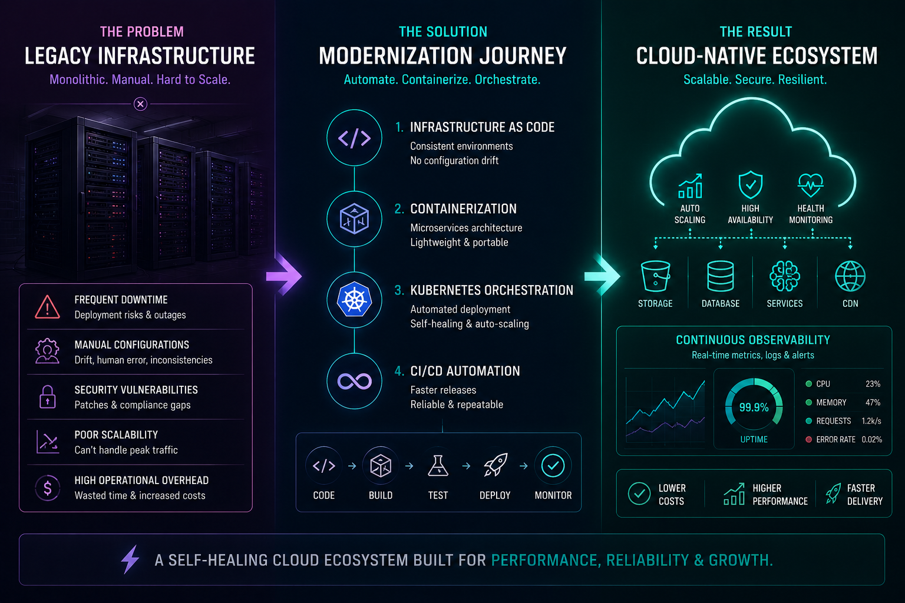
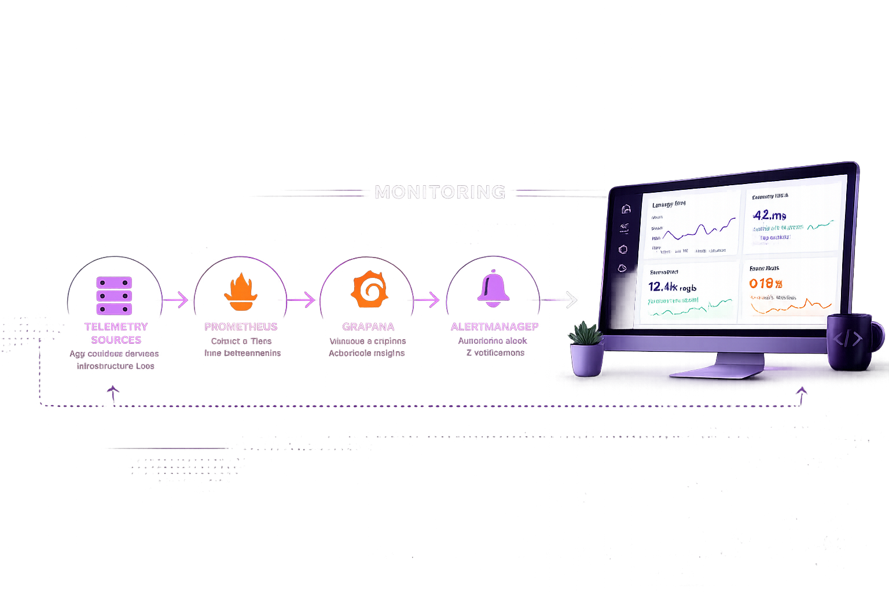
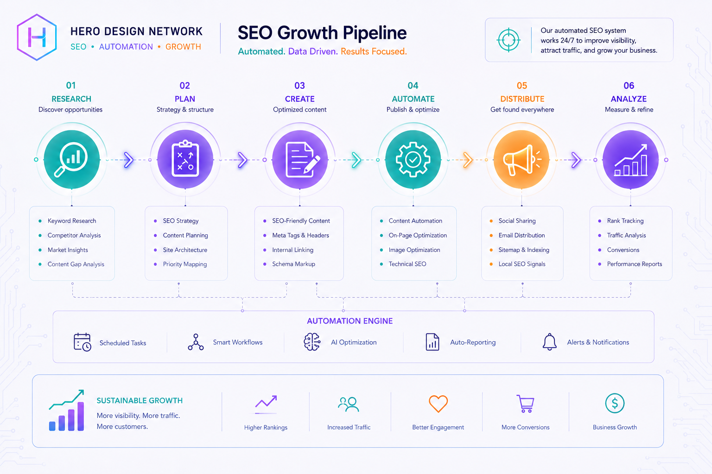

// PROJECTS
Deep-diving into cloud architectures, DevOps modernization, and automated growth systems.

// CASE STUDY 01
The platform was tethered to local monolithic servers, resulting in frequent downtime during deployment cycles and inability to scale during peak traffic. Manual configurations led to drift, security vulnerabilities, and high operational overhead.
Heidi implemented a comprehensive CI/CD modernization strategy — containerizing microservices via Kubernetes, deploying Infrastructure as Code to eliminate environmental drift, and creating a self-healing cloud ecosystem.
// CASE STUDY 02
Implementation strategy centered on deep-stack observability. By deploying an integrated monitoring cluster using Prometheus and Grafana, fragmented telemetry was transformed into actionable intelligence — enabling sub-second tracking of latency, throughput, and error rates across the entire distributed cloud environment.
Automated the alerting workflow via infrastructure-as-code, integrating directly into the CI/CD pipeline. This enabled performance regression detection in pre-production, significantly reducing downtime.


// CASE STUDY 03
Architected a resilient cloud infrastructure prioritizing data integrity and lightning-fast content distribution. By leveraging global CDN networks and zero-trust security postures, bottlenecks and vulnerabilities at the edge were eliminated before impacting service.
Custom SEO workflows integrated directly into CI/CD pipelines, ensuring every deployment is optimized for semantic indexing and performance. Technical precision translated into measurable business performance metrics.
// MEASURED BUSINESS IMPACT
By integrating automated SEO workflows and robust CI/CD modernized pipelines, we delivered extensive uplift in organic reach — enabling focus on high-level strategy while infrastructure drives consistent growth.